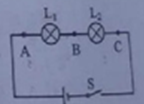
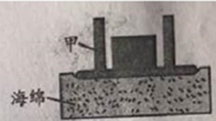
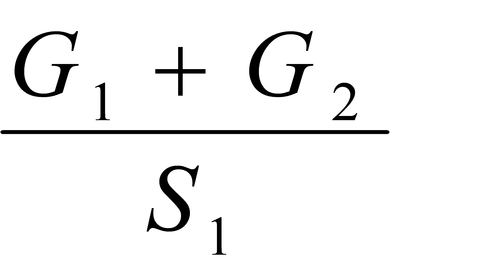
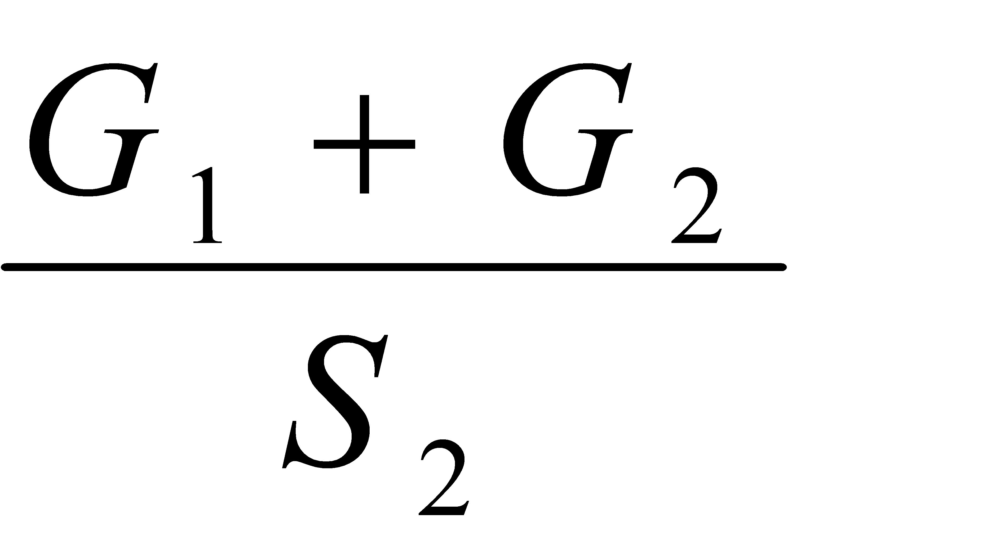
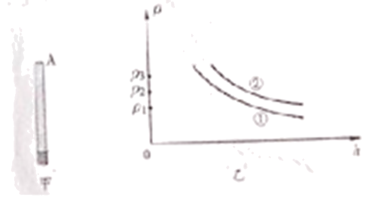

2020年北京市中考物理试题 · 选择题 第11、12、13、14、15题
11.如图所示电路中，将开关S闭合，完全相同的灯L1和灯L2均发光。下列说法正确的是（ ）

A 灯L1比灯L2亮
灯L1比灯L2亮
B. 通过A点的电流大于通过B点的电流
C. 灯L1的实际电功率比灯L2的实际电功率小
D. 电路中AB两点间的电压等于BC两点间的电压
12.人用水平方向的力推物体，使物体在粗糙程度相同的水平面上做匀速直线运动，下列说法正确的是（ ）
A. 人对物体的推力大于水平面对物体的摩擦力
B. 若增大推力，物体所受摩擦力也将增大，物体仍做匀速直线运动
C. 若撤去推力，物体在继续运动过程中所受摩擦力大小不变
D. 若撤去推力，物体的运动状态不会发生改变
13.依据表格中的数据，下列说法正确的是（ ）
物质 | 比热容c/ 【J/(kg·°C)-1】 |
水 | 4.2×103 |
煤油 | 2.1×103 |
砂石 | 约0.92×103 |
A. 一杯水倒出一半，杯内剩余水的比热容变小
B. 水和砂石放出相等热量，水的温度降低得较多
C. 水的比热容表示水的温度升高1°C吸收的热量是4.2×103J
D. 质量相等的水和煤油，吸收相等热量，煤油温度升高得较多
14.如图所示，把小桌甲倒放在海绵上，其上放一个物体乙，它们静止时，物体乙的下表面和小桌甲的桌面均水平。已知小桌甲重G1，桌面面积为S1；物体乙重G2，下表面的面积为S2，下列说法正确的是（ ）

A. 甲对海绵的压力就是甲受到的重力
B. 乙对甲的压力就是乙受到的重力
C. 甲对海绵的压强大小为

D. 乙对甲的压强大小为

15.某同学在粗细均匀的木棒上缠绕一些细铜丝，制作简易密度计A，如图甲所示。将A依次放入一系列密度已知的液体中，每次当A在液体中处于竖直漂浮状态时，在木棒上标出与液面位置相平的刻度线及相应密度值ρ，并测量木棒浸入液体的深度h，再利用收集的数据画出ρ-h图像，如图乙中图线①所示。该同学继续选用了与A完全相同的木棒，并缠绕了不同质量的铜丝制作简易密度计B。将B同样依次放入一系列密度已知的液体中进行实验，得到图乙中图线②。他进一步研究发现对同一密度计浸入液体的深度h和对应密度ρ的乘积不变。铜丝的体积可以忽略，下列说法正确的是（ ）

A. 上述实验中密度计A在不同液体中漂浮时，浸入的深度h越大，受到的浮力越大
B. 密度计B上越靠近铜丝的位置，其刻度线对应的密度值越小
C. 密度计A上缠绕铜丝的质量小于密度计B上缠绕铜丝的质量
D. 若图乙中ρ3-ρ2=ρ2-ρ1，则密度计A上ρ3与ρ2刻度线的间距大于ρ2与ρ1刻度线的间距